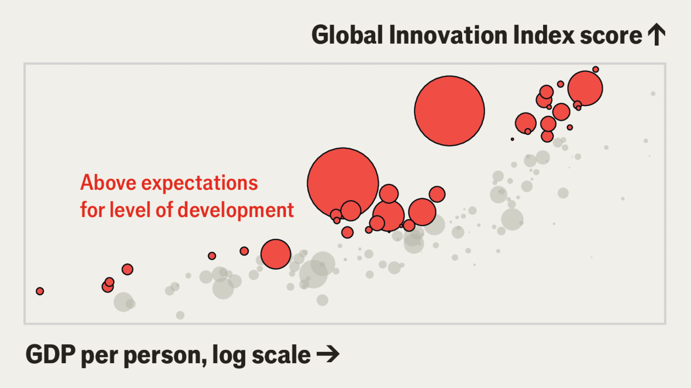

全球最具创新力的国家
The most innovative countries in the world
特朗普会拖累美国的排名吗？

- 特朗普对美国的创新是好是坏难以判断：一方面他力挺半导体和AI等前沿产业、催生数据中心热潮并用《天才法案》为稳定币奠基；另一方面他攻击顶尖大学、限制高技能移民、削减公共研究经费，被学者称为「对科学的战争」。
- 世界知识产权组织（WIPO）每年发布「全球创新指数」，以79项指标对139个经济体排名。美国自2023年起稳居第三，瑞士自2011年起年年第一——榜单头部异常稳定，部分因为指标宽泛、单一项权重都不具决定性。
- 但稳定之下有暗流：美国在全球后期风险投资中的份额在扩大，但与第四名韩国的差距在收窄；在多项最新指标上排名下滑——衡量企业面临政治、法律和运营风险的指标从去年的第23位跌至今年的第36位。
- 前沿竞争加剧：美国「深科技」（非数字世界的硬科技）初创企业数量最多（12752家，约54%仍在早期），但中国增长飞快——2025年有3466家，是五年前的两倍多。
特朗普总统对美国创新是好事吗？他的政府力挺半导体和人工智能等前沿产业（「谁赢得AI，谁就赢得一切！」）。它主持了一场史无前例的数据中心热潮，确保美国拥有比任何国家都多的可用「算力」。去年通过的《天才法案》还为稳定币——一种挂钩美元的数字货币——奠定了监管基础。 但特朗普也攻击了美国顶尖大学、限制高技能移民、削减了对支持研究的公共机构的拨款。学者们抱怨这是一场「对科学的战争」。 对美国创造力的总体影响很难追踪。一个寻找线索的地方是世界知识产权组织（WIPO）每年发布的「全球创新指数」。它依据从研发支出到学校考试成绩的79项指标，对139个经济体进行排名。有些数据不够及时，难以反映特朗普的影响。但有多项指标涉及他重返白宫后的第一年。
总体上，美国仍排第三，这是它自2023年以来一直保持的位次。事实上，创新榜单的头部在座次上展现出的「创新」少得惊人。瑞士依旧第一，与去年以及2011年以来每一年都一样。这种稳定部分反映了该指数的广度：没有任何单一指标具有决定性权重。
它也掩盖了水面之下的一些变化。例如，美国在全球后期风险投资交易中所占份额正在扩大。但它与第四名韩国之间的创新差距已经收窄。并且自特朗普上任以来，美国在多项最新指标上的排名有所下滑。其中一项指标追踪企业面临的政治、法律和运营风险。去年美国在这项指标上排第23位。今年跌至第36位。
山姆大叔在创新前沿也面临激烈竞争。去年，「深科技」创业出现上升势头——所谓深科技，指那些在非数字世界从事物理技术突破的资本密集型企业。美国目前拥有最多的深科技初创企业：12752家，其中约一半（54%）仍处于早期开发阶段。但中国的总数增长飞快。它2025年的3466家，是五年前的两倍多。这种增长会令中国政府欣喜——它已释放信号，强烈偏好深科技企业，而非面向消费者的「软」对手。这也会让美国许多决策者和实业家担忧——他们已意识到「尚未被软件技术吃掉的世界」在地缘政治上的重要性。
「全球创新指数」对人类创造力和创意持宽泛视角。硬科学并非攀爬年度排名的唯一途径。沙特阿拉伯的位次从2019年的第68位升至今年第42位。如今它紧挨着希腊之下——后者若在公元前350年必定雄踞榜首。沙特得益于对其官僚体系的全面改革，改善了监管质量、削减了繁文缛节，让经商容易得多。它的制度在2019年指数中排第104位，如今排第25位。有时，创新需要解开宇宙的科学之谜。但大量有用的政策改革，其实并没有那么深奥。